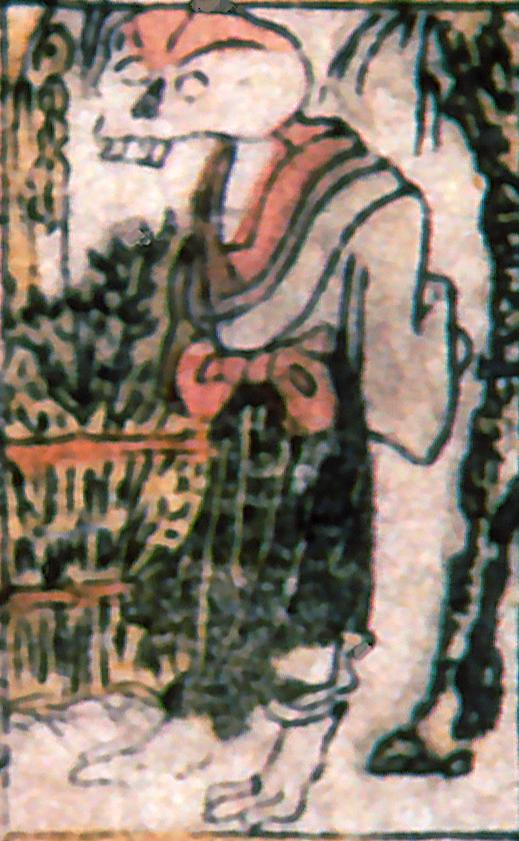

← 图鉴索引

垣根の前に立つ袈裟を着た骸骨。
著作者：叢豊丸／出典：親書誌：A5_pushkin_0018：新板化物尽；シンバンバケモノツクシ／日付：2011／資源識別子：A5_pushkin_0018_0013_0000
Copyright (c)2010- International Research Center for Japanese Studies, Kyoto, Japan. All rights reserved.